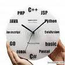

І. МЕТА І ЗАВДАННЯ ДИСЦИПЛІНИ
Мета вивчення навчальної дисципліни полягає в ознайомленні студентів з теоре-тичними основами побудови сучасних мов програмування, поширених технологій програмування, класифікацією та особливостями, областю застосування різних мов, а також набутті навиків практичного програмування (на прикладі мови С++).

- Завдання вивчення навчальної дисципліни
- набуття студентами теоретичних знань про принципи побудови сучасних мов програмування,
- вивчення основних конструкцій мов,
- типових задач алгоритмічного програмування,
- набуття досвіду роботи в інтегрованому середовищі розробки програм (на прикладі компілятора Dev С++)
- проходженні повного циклу розробки програмного забезпечення (розробка алгоритму -кодування - компіляція - відлагодження - документування).
У результаті вивчення навчальної дисципліни студент повинен
знати:
- основи теорії алгоритміки;
- основні конструкції алгоритмічних мов програмування;
- основні алгоритми сортування, знаходження мінімальних та максимальних значень;
вміти:
- використовувати теоретичні знання в процесі створення програм;
- застосовувати алгоритмічні структури при описі логіки інформаційних систем.
- програмувати в алгоритмічній мові програмування.
ІІ. ТЕМАТИЧНИЙ ПЛАН ДИСЦИПЛІНИ
Метотичка для самостійної роботи
V. КРИТЕРІЇ ОЦІНЮВАННЯ ЗНАНЬ СТУДЕНТІВ
Перевірка та оцінювання знань студентів з навчального курсу " Основи програмування та алгоритмічні мови" може проводитися декількома методами :
- Фронтальне та індивідуальне опитування на практичних заняттях
- Робота над творчими завданнями
- Розв’язок практичних задач
Результати знань студентів можуть бути оцінені за чотирибальною системою “відмін-но”, “добре”, “задовільно”, “незадовільно”.
Оцінювання знань :
- При проведенні фронтального та індивідуального опитування на практичних занят-тях визначається рівень знань студентів з теоретичних та практичних питань курсу:
- на оцінку “задовільно” – має бути 60% правильних відповідей від загальної кі-лькості запитань
- на оцінку “добре” – має бути 80% правильних відповідей від загальної кілько-сті запитань
- на оцінку “відмінно” –має бути 100% правильних відповідей від загальної кількості запитань
- оцінка “незадовільно” ставиться в тому випадку, коли студент не дав позитив-ної відповіді на запитання
- При роботі над творчими та ситуаційними завданнями визначається рівень знань студентів, передбачених програмою курсу, ознайомлення з додатковою літературою, вміння творчо мислити, використовувати програмні засоби, будувати алгоритми вико-нання завдань, реалізовувати ці алгоритми у відповідньому програмному середовищі:
- оцінка “задовільно” – ставиться тоді, коли студент розуміє суть творчого за-вдання, але не вміє його практично реалізувати
- оцінка “добре” – ставиться тоді, коли студент розуміє суть творчого завдання, подає вказівки та команди, щодо програмної реалізації завдання з незначними помил-ками
- оцінка “відмінно” - ставиться тоді, коли студент повністю розкрив суть творчо-го завдання, вміє задавати послідовність команд і вказівок , виводити і зберігати результати, творчо мислити та ефективно використовувати програмні засоби
- оцінка “незадовільно” ставиться в тому випадку, коли студент не розуміє суть творчого завдання, не вміє практично використовувати теоретичні знання.
- При розв’язанні практичних задач студент повинен вміти використовувати набуті те-оретичні знання для вирішення практичних завдань, вміти застосовувати технологію на практиці, обробляти і зберігати вхідну і вихідну інформацію:
- оцінка “незадовільно” ставиться в тому випадку, коли студент не виконав практичну задачу
- оцінка “задовільно” – ставиться тоді, коли студент не повністю виконав практи-чне завдання чи розрахункову задачу
- оцінка “добре” – ставиться тоді, коли студент зробив практичне завдання, але допустив незначну помилку
- оцінка “відмінно” - ставиться тоді, коли студент повністю виконав практичне завдання, належним чином оформив і зберіг файл із розв’язком.
Інформаційні ресурси
- Основы программирования http://www.kufas.ru/programming0.htm
- Оформление программного кода http://www.stolyarov.info
- www.specialist.ru/online-testing certifications.ru/
- www.quizful.net
- http://spec.testpark.ru/
- http://www.java2s.com/Tutorial/Cpp/0020__Language-Basics/0020__Introduction.htm
| № з/п | Назви тем | Кількість годин |
|---|
| Денна форма | Заочна форма |
| Усього | в тому числі | Усього | в тому числі |
| Лекції | Практичні | Лабораторні | Сам.робота | Лекції | Практичні | Лабораторні | Сам.робота | <
| 1 | 2 | 3 | 4 | 5 | 6 | 7 | 8 | 9 | 10 | 11 | 12 |
|
На початок сторінки
Питання за адресою lpoteryailo@rambler.ru